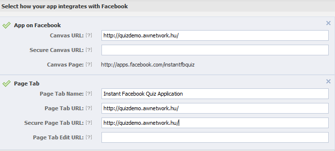
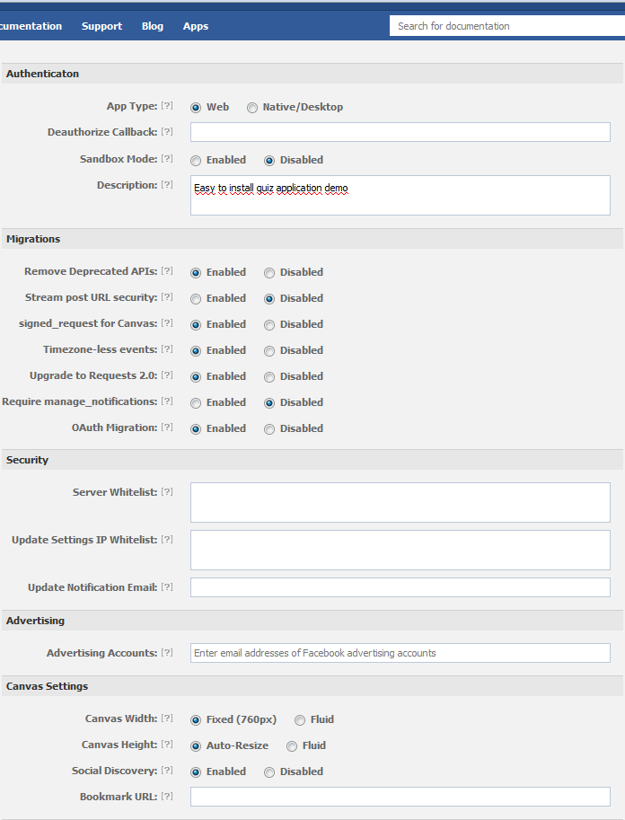

Instant Facebook Quiz is a fully customizable and easy-to-use facebook quiz. It contains a user interface integrated with Facebook and an admin page where you can edit the questions and customize the layout, including the colors of the application and the text fields seen by the users. You have full access to the players’ name, email, age, gender information.
First thing you have to do is to upload the Quiz Application files on your server. You will find the files page in the zip folder. You will need the link to the website.
Open the database_config.inc.php end fill in the fields with the coresponding strings from the previous section:
define('DB_USER', "Your_DB_User");
define('DB_PASS', "Your_DB_Password");
define('DB_DATABASE', "Your_DB_Name");
To create Facebook applications you need to register your account on https://developers.facebook.com/
Create an application.
You can find the App ID and App Secret on the top. You will need them later.
Fill in the form like below:


Register you quiz domain on http://victorarthur.com/item-validation .
In 24h you will get a key file.
Now your quiz application has to be working!
You can customize the Instant Quiz from the admin page, which you can find under
http://YourSiteURL/admin.
Log in using the default admin/admin for username and password.
In the Settings menu you can change the threshold percentage reached by the players to become winners.
You can also delete all the questions and answers and the list of players by clicking the corresponding buttons.
Instant Quiz is designed to handle only one administrator. You can change his username and password in the Settings menu.
New questions are uploaded in the Question editor menu.
The fields Question and Correct answer are required, if you leave any of them empty, the question cannot be uploaded.
There is no limit for the number of questions. You can upload at most 4 wrong answers for each question.
Uploaded questions and answers can be deleted and modified by clicking the and icons.
In the players menu you can review the name, email address, age, gender of the players. The results and the date of the game are listed as well.
All text fields’ and text areas’ content can be changed in the text fields menu. You can format the text areas using a WYSIWYG edior.
You can edit the labels of the buttons, the rules of the game, the texts seen at the end of the game and the post messages.
Strings (name), (%) and (like) in the corresponding fields are replaced by the name of the player, his or her results reached and the a Like button referring to your Facebook fanpage.
You can change the logo of the application by modifying the source of the image in the index.php and endgame.php file (lines 108-110):
<div id="logo" style="float:left; margin-top:10px; padding-left:10px;">
<img src="images/logo_with_text.png" alt="Logo" width="200" />
</div>
To change the image of the front page modify lines 125-127 of index.php:
<div id="toggleText" style="display: block; text-align:center;">
<img src="images/startimg.jpg" alt="sample" width="760" />
</div>
The image containing the boxes below can be found in the index.php lines 132-134. The content of the boxes can be edited by altering pizza.psd.
<div id="footer">
<img src="images/footer.png" alt="sample" width="760" />
</div>
The colour of the Start button can be altered by modifying lines 153-180 of CSS/style.css .
The colour of the buttons Rules and Winners are described in lines 111-130 of CSS/style.css.
The colour of the Share button is described in lines 132-151 of CSS/style.css.
The background colour of the quiz is described in the 2nd line of CSS/InstantQuiz.css.
The text colour of the quiz is described in the 6th line of CSS/InstantQuiz.css.
To change the shared image change its path in index.php line 119 and endgame.php line 112.
To change the post image change its path in endgame.php line 38.
If you have just connected your quiz to Facebook and it cannot be loaded, check the config.inc.php file. It is very important that FBAPPID, FBAPI and FBSECRET strings look exactly like on the developer page and contain no spaces between the string and the quote mark.